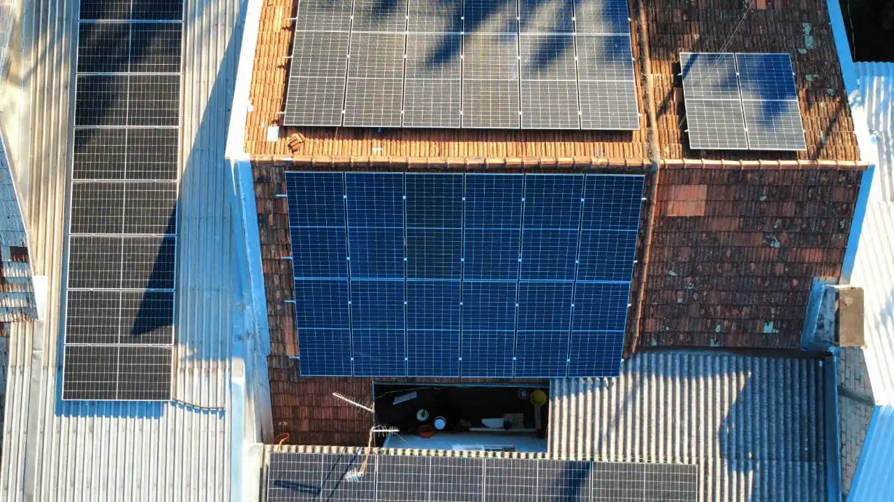
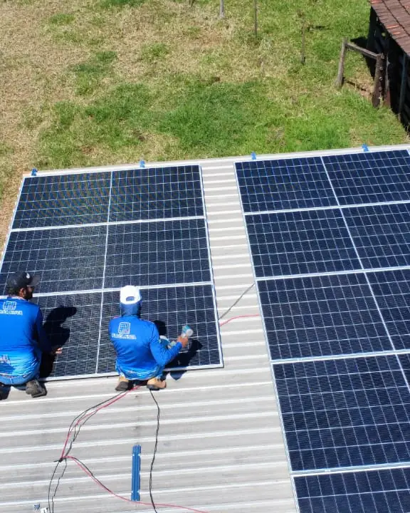

Energia solar industrial em São Miguel do Iguaçu: projeto, instalação e homologação
Na fatura industrial, a redução fica entre 60% e 80%, conforme a demanda contratada e o horário de consumo
Atendemos São Miguel do Iguaçu com equipe própria, a partir da nossa sede em Medianeira. Projeto elétrico assinado, ART no CREA-PR e homologação completa junto à Copel, do protocolo inicial até a troca do medidor bidirecional. Orçamento calculado a partir da sua fatura real, sem estimativa de tabela.
Resposta em poucos minutos no horário comercialEnergia solar industrial em São Miguel do Iguaçu: a fatura vem antes do telhado
Quem é Grupo A, ligado em média tensão, paga numa linha a energia e em outra a demanda contratada, com preço diferente na ponta. Sistema dimensionado só pelo total de kWh resolve metade do problema.
Em São Miguel do Iguaçu, a base industrial inclui frigoríficos de pecuária, cooperativas de grãos e instalações do setor de turismo próximas ao complexo Itaipu. Os barracões industriais têm telhado metálico ou fibrocimento, para metálico, grampos autobrocantes; para fibrocimento, grampos com vedação butílica sem perfurar a chapa. Projetos industriais trabalham com ligação trifásica, dimensionamento de demanda contratada e fator de potência.
Em São Miguel do Iguaçu, onde a economia é marcada por grãos, pecuária, turismo de Itaipu, boa parte da carga industrial vem de motores, refrigeração e armazenagem, com funcionamento concentrado no período diurno. É o cenário em que a geração solar mais coincide com o consumo.
Barracão de indústria quase sempre tem chapa metálica. O módulo vai preso com grampo próprio e vedação em cada ponto, depois de conferirmos se a estrutura aguenta de 12 a 15 kg a mais por metro quadrado.
Quer saber quanto sobraria da sua conta em São Miguel do Iguaçu?
Envie uma foto da sua fatura de energia. Devolvemos o cálculo de economia, o investimento estimado e o tempo de retorno para São Miguel do Iguaçu e região.
Enviar minha conta de luz
Safra, entressafra e consumo industrial em São Miguel do Iguaçu
Para instalações industriais em São Miguel do Iguaçu, frigoríficos, cooperativas, hotéis de grande porte, energia é custo operacional fixo. O fotovoltaico reduz esse custo entre 60% e 80%, com payback entre três e cinco anos dependendo do perfil de operação. Para frigoríficos com consumo intensivo de refrigeração diurna, a coincidência entre geração e consumo é especialmente alta.
Para empresas com ligação trifásica, a conta de energia inclui encargos de demanda e fator de potência além do consumo faturado. O fotovoltaico reduz o consumo faturado e, quando projetado com banco de capacitores, pode eliminar também os encargos de energia reativa. A redução total na fatura fica entre 60% e 80%.
Para pessoa jurídica, há ainda o efeito fiscal: o sistema pode ser depreciado em cinco anos (20% ao ano), reduzindo base de IRPJ e CSLL para Lucro Real ou Presumido. No Paraná, a energia compensada tem isenção de ICMS. A M&A entrega documentação técnica completa para o processo contábil, projeto com ART, memorial de cálculo conforme NBR 16690.
Em São Miguel do Iguaçu, o deslocamento não encarece o projeto. A equipe própria atende em dias consecutivos sem custo adicional de hospedagem ou mobilização.
Onde a energia solar entra numa indústria de São Miguel do Iguaçu
A indústria responde por 10% do valor adicionado de São Miguel (IBGE, 2021), e a ANEEL registra 36 sistemas solares industriais no município, com mediana de 43,9 kW. O sistema segue a curva de carga de cada setor.
Motores e linhas de produção
Produção de dia: consome junto com a geração e usa quase tudo na hora.
Refrigeração e câmaras frias
Frio: compressor ligado o dia todo, puxando mais no calor.
Armazenagem e aeração de grãos
Grãos: secador e aeração pesam na colheita, e o crédito da entressafra ajuda.
Ar comprimido e bombeamento
Motores grandes: dá para programar o funcionamento para o meio do dia.
Iluminação e climatização de galpões
Escritório: consumo previsível no expediente.
Manutenção de sistemas existentes
Limpeza e diagnóstico de queda de geração, inclusive em sistemas de outras empresas.
Exemplos de dimensionamento para indústrias em São Miguel do Iguaçu
Três perfis de consumo comuns na região, com potência, economia mensal projetada e prazo de retorno estimados para dar ordem de grandeza; o seu projeto é calculado com a sua fatura.
Frigorífico / abatedouro de pecuária
Consumo médio de 12.000 kWh/mês com refrigeração intensiva diurna. Sistema de 120 kWp sobre telhado metálico industrial. Alta coincidência entre geração e carga de refrigeração maximiza o autoconsumo direto. Economia projetada de R$ 10.200 por mês após homologação. Retorno em 3 anos.
Hotel de médio porte próximo ao Lago de Itaipu
Consumo médio de 4.500 kWh/mês com pico no verão. Sistema de 45 kWp sobre telhado industrial. Consumo concentrado em climatização e iluminação, coincidente com a geração diurna. Economia projetada de R$ 3.825 por mês após homologação na Copel. Retorno em 3,5 anos.
Cooperativa / armazém de grãos
Consumo médio de 8.000 kWh/mês com pico na safra. Sistema de 80 kWp sobre telhado metálico. Economia projetada de R$ 6.800 por mês. Payback em 3,5 anos. A distância até a obra não impacta o custo da obra, equipe própria atende em dias consecutivos sem sobretaxa.
Sua conta em São Miguel do Iguaçu passou de R$ 400?
Nesse patamar, o sistema costuma se pagar em menos de cinco anos. Vale calcular antes do próximo reajuste da Copel.
Energia solar na indústria de São Miguel do Iguaçu: os números
Em outubro de 2026, a ANEEL registrava 36 sistemas de energia solar em unidades industriais de São Miguel do Iguaçu, somando 1,8 MW.
A potência típica de um sistema industrial no município é de 43,9 kW (mediana), abaixo do limite de 75 kW da microgeração. Nos sistemas residenciais, a mediana é de 5,6 kW.
O PIB de São Miguel do Iguaçu foi de R$ 1,48 bilhões em 2023, segundo o IBGE.
A geração varia com a estação. Em São Miguel do Iguaçu, a irradiação no plano horizontal vai de 6,55 kWh/m² por dia em dezembro a 2,93 em junho, com média anual de 4,89.
Fontes: ANEEL, Relação de Empreendimentos de Geração Distribuída (dados de outubro de 2026); IBGE, PIB dos Municípios 2023; NASA POWER, climatologia de irradiação solar.
Marcas com representação e assistência no Brasil
Garantia de 30 anos só tem valor se existir estrutura para acionar. Trabalhamos com fabricantes que mantêm suporte em território nacional.
Módulos fotovoltaicos
Os módulos de 620 W tipo N (Ronma, Gokin e ERA) perdem de 0,29% a 0,30% por grau acima de 25 °C, pela ficha da Gokin e da Ronma. Em chapa metálica, que esquenta, esse número entra no cálculo. A garantia de desempenho é de 30 anos.
Inversores
No trifásico 127/220 V, o Sofar 30KTLX-G3-LV dá 30 kW, aceita até 51 kWp e monitora cada série nas quatro entradas. Funciona de -25 °C a 60 °C com ventilação forçada, então precisa de espaço livre em volta.
Estruturas de fixação
Alumínio anodizado e parafusos em inox 304, dimensionados para a carga de vento da região conforme NBR 6123. Fixação sem furo desnecessário.
Proteções elétricas
String box com DPS, fusíveis e disjuntores conforme NBR 16690 e exigências da Copel. É o item que a concorrência mais corta para baixar preço.
Monitoramento
Aplicativo com geração em tempo real, histórico por período e alerta automático em caso de falha. Você acompanha do celular e nossa equipe recebe o mesmo alerta.
Cabeamento solar
Cabos com dupla isolação e proteção UV, conectores MC4 originais e crimpagem com ferramenta específica. Sem emenda improvisada exposta ao sol.
Veja as marcas e os modelos de módulos e inversores que instalamos hoje
Etapas de um projeto industrial em São Miguel do Iguaçu
No industrial, o estudo das contas decide o resultado.
Análise das faturas
Lemos um ano de consumo e demanda, na ponta e fora, e a modalidade tarifária.
Vistoria técnica
Na unidade em São Miguel, vemos telhado, estrutura, quadro geral, entrada ou cabine de média tensão e o caminho dos cabos.
Projeto e viabilidade
A proposta traz projeto, geração por mês, preço por item e economia por componente da fatura.
Pedido de acesso na Copel
A Copel fica com a gente. Em minigeração, o parecer de acesso pode pedir estudo e obra na rede, e isso vai para o prazo.
Instalação e comissionamento
Obra marcada com a produção, comissionamento e monitoramento que avisa a sua equipe e a nossa.
Clientes atendidos pela M&A
Registros de entrega feitos pela nossa equipe.


Perguntas sobre energia solar industrial em São Miguel do Iguaçu
Telhado ou solo para a indústria em São Miguel do Iguaçu
A M&A Soluções Energéticas atende São Miguel do Iguaçu com equipe própria, a partir da nossa sede em Medianeira. O deslocamento não gera sobretaxa: a visita técnica, a instalação e o comissionamento são realizados em dias consecutivos sem custo adicional para o cliente. A mão de obra da instalação tem garantia de 5 anos. O prazo final depende da Copel. A finalização do nosso serviço leva em torno de 45 a 60 dias.
O sol do Oeste do Paraná rende bem o ano todo e cai no inverno, e o projeto usa os doze meses para que a geração prometida apareça também na conta de julho. Em São Miguel do Iguaçu, com perfil de grãos, essa irradiação é suficiente para compensar com folga o consumo anual da maioria dos perfis de instalação.
Além de São Miguel do Iguaçu, atendemos com a mesma equipe as seguintes localidades:
- Medianeira
- Missal
- Foz do Iguaçu
Não encontrou sua localidade? Entre em contato mesmo assim, atendemos com frequência municípios vizinhos e, dependendo do porte do projeto, o deslocamento não altera o investimento final.
Telhado do galpão ou estrutura em solo
No telhado
No telhado: área que já existe, perto do consumo, com menos cabo. Depende da estrutura e da direção das águas.
Em solo
No solo: direção e inclinação livres e limpeza fácil, mas pede terreno, base e cerca, e o kWp sai mais caro. Serve quando o telhado não comporta.
O que cobrar de quem projeta o sistema da sua indústria
- Leitura de consumo e demanda, não só do total.
- Projeto de engenheiro eletricista com ART no CREA-PR.
- Economia separada entre ponta e fora de ponta.
- Proteções pela NBR 16690 e aterramento ligado ao existente.
- Vistoria da estrutura antes da proposta.
- Monitoramento com alerta e plano de manutenção.
Recebeu proposta para a sua indústria em São Miguel, Medianeira ou Foz? Manda pelo WhatsApp. A gente confere, sem cobrar, se ela considera demanda e tarifa de ponta.
Sua próxima conta de luz em São Miguel do Iguaçu pode ser a última alta
Envie sua fatura pelo WhatsApp. Você recebe o estudo de viabilidade completo, sem custo e sem compromisso, com a economia projetada e o tempo de retorno do investimento.
Solicitar orçamento gratuito Atendimento humano · Seg a Sex · 8h às 18h · Sáb 8h às 12h